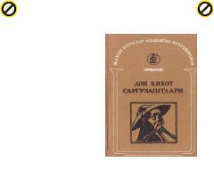

DKIspan adabiyotining klassik romani bo'lib, o'lmas obrazlar sarguzashtlarini hikoya qiladi.
Migel de Servantesning ushbu mashhur romanida xayoliy sarguzashtlar ortidan quvuvchi o'ziiga xos qahramon Дон Кихот va uning sodiq mulozimi Sanчо Пансаning sarguzashtlari hikoya qilinadi. Asar o'z davridagi illatlar va insoniy nuqsonlarni o'tkir hajv ostida ochib beradi.